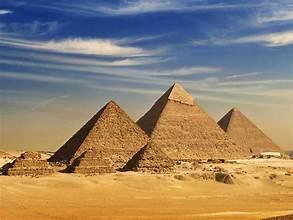
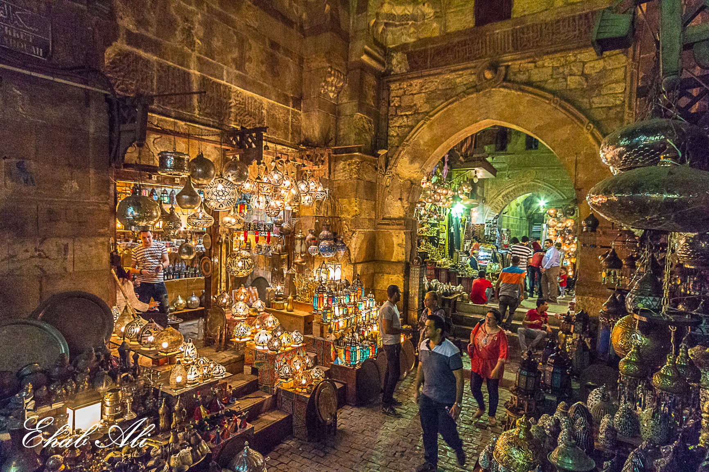

My favourite places to see in Egypt
The pyramids
The Egyptian pyramids are ancient masonry structures located in Egypt. Sources cite at least 118 identified "Egyptian" pyramids. Approximately 80 pyramids were built within the Kingdom of Kush, now located in the modern country of Sudan. Of those located in modern Egypt, most were built as tombs for the country's pharaohs and their consorts during the Old and Middle Kingdom periods.
Khan El khalili
Khan el-Khalili (Arabic: خان الخليلي) is a famous bazaar and souq (or souk) in the historic center of Cairo, Egypt. Established as a center of trade in the Mamluk era and named for one of its several historic caravanserais,
